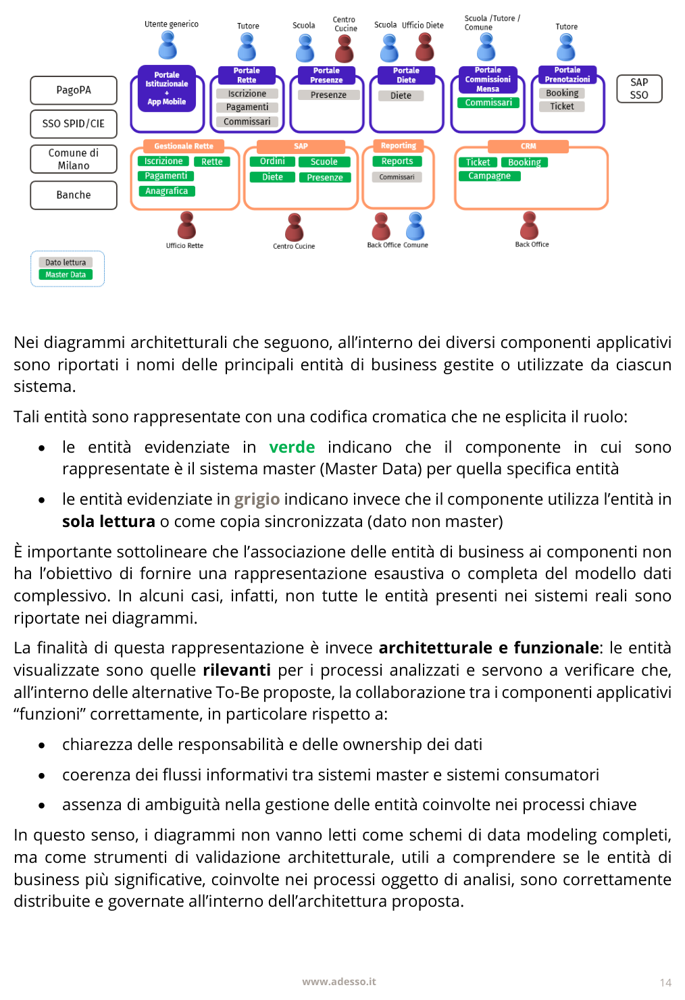
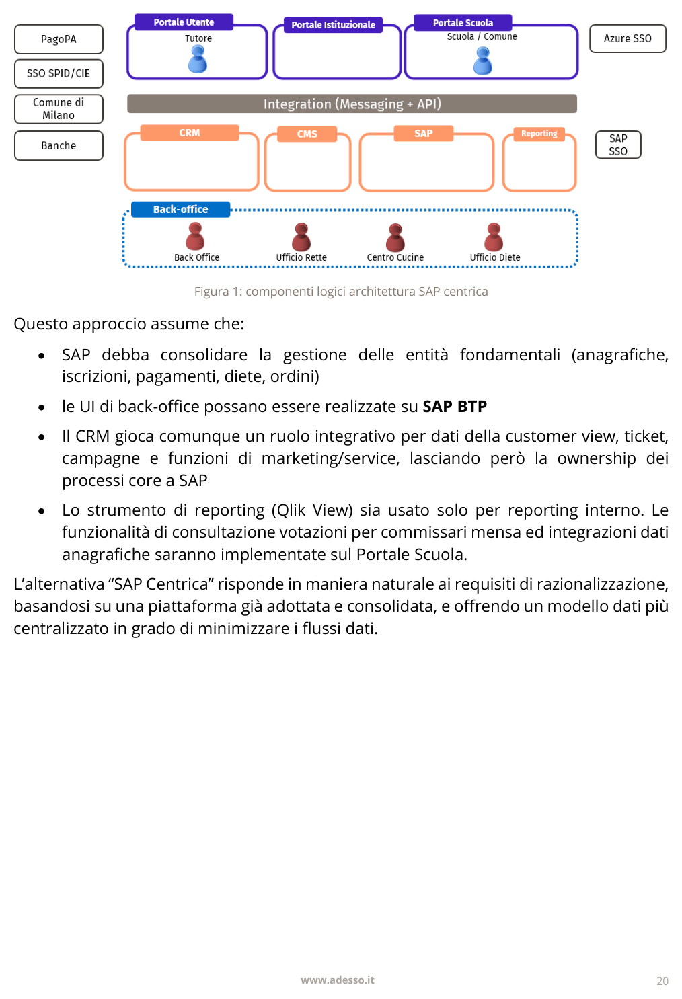
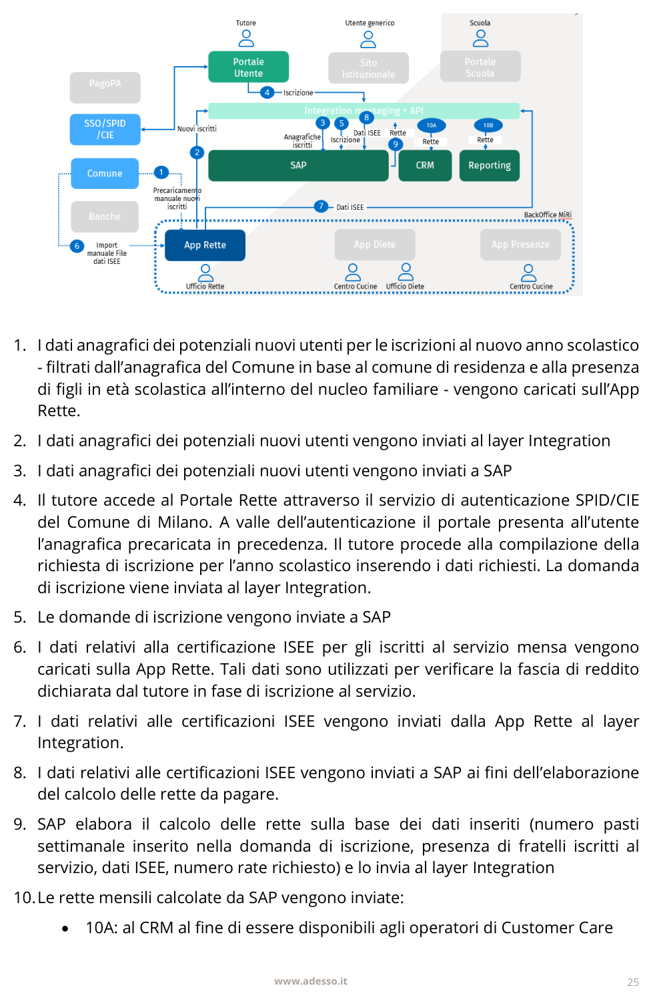
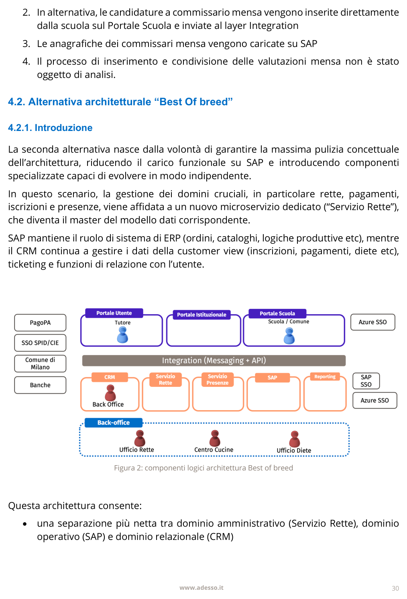
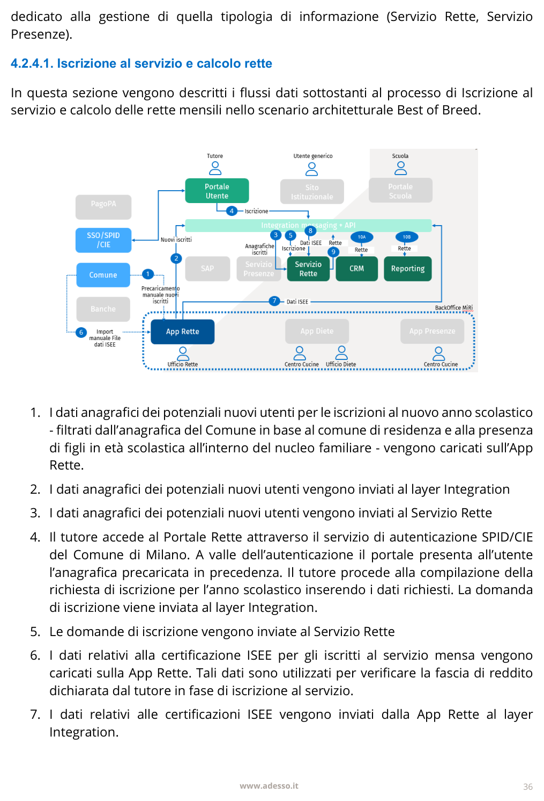

Ricevuti business case e WBS iniziali (13 work package), stima ROM 506-911 gg-persona a seconda dello scenario.
Perimetro stima chiarito (solo ENG, non globale con Adesso.it); FP sizing cross-check indipendente: 44 FP ≈ 44 gg-persona. Preparate bozza volumi/profilo ed escalation plan da proporre al meeting del 6/10.
Business_Case aggiornato: WBS invariata (633 gg base), ora con fogli Review (10 rilievi, 5 Alta priorità) e Copertura (12 requisiti AS-IS/TO-BE, nessuno 'Completo'). Prezzo indicativo esplicitato. Picco FTE ricalcolato: 5,9 a marzo 2027 (prima 6,5 a febbraio), per redistribuzione lineare sui 13 WP, non per cambio perimetro.
Incontro tecnico con Adesso.it — Fase 1 MVP Ticketing (Milano Ristorazione)
Go-live target Fase 1 — primo step validato, MVP Ticketing (non ancora vincolante — gate su volumi/NFR/identity-Dynamics)
Fonte dati: file locale canale Teams (OneDrive sync). Documento sorgente principale: TODO_Meeting_Tecnico_Adesso_MiRi.md (checklist preparazione meeting tecnico con Adesso.it), più Business_Case_MVP_Ticketing_MiRi.xlsx (aggiornato il 06/10/2026, lo stesso giorno del meeting) e 2 PDF: analisi As-Is/To-Be, ticketing. Sezione "Idee proposte dall'agente" in fondo: contenuto generato, non proveniente dal cliente.
Sintesi condensata del documento "MiRi Deliverable Analisi As-Is - Soluzione To-Be" (42 pagine). Documento completo linkato in testa alla pagina.
Obiettivo del documento: ricostruire i processi e l'architettura As-Is, evidenziarne criticità, definire requisiti/principi guida per l'evoluzione e descrivere due alternative To-Be (SAP Centrica e Best of Breed). Non entra nel dettaglio esecutivo né nella roadmap: quella è uno step successivo.
Sistemi eterogenei nati per esigenze puntuali: 5 portali indipendenti (Rette, Presenze, Diete, Commissioni Mensa, Istituzionale/App), 3 sistemi di back-office (Gestionale Rette/eCivis, SAP ERP, Qlik View), sistemi di caring frammentati (CRM Dynamics, call center, Ufirst), integrazioni esterne perlopiù manuali/punto-punto (Comune, PagoPA, banche).
Criticità principale: nessuna Single Source of Truth anagrafica. L'anagrafica più affidabile è quella del Gestionale Rette, ma diete e SAP introducono dati duplicati e non riconciliati → rallentamenti, errori, impossibilità di vista integrata sul cittadino.
Altre criticità: UX frammentata su più portali, processi parzialmente manuali (modulistica cartacea, file-based), integrazioni deboli punto-punto, silos applicativi, capacità di analisi/insight limitata.

Architettura As-Is: portali, sistemi di back-office e flussi dati (verde = master, grigio = copia/lettura)Entry point unico, vista integrata dei servizi, riduzione attività manuali, allineamento automatico con enti esterni, modello dati condiviso con master espliciti, eliminazione ridondanze. Principi: modularità, scalabilità, data-centricity, automazione — con forte enfasi su modello dati e ownership, non solo applicazioni.
SAP diventa il sistema master per anagrafiche, iscrizioni, rette, pagamenti, diete e ordini; i portali diventano front-end puri; CRM resta per ticket/booking; CMS per i contenuti; un Integration Layer elimina le integrazioni punto-punto. Sostituisce completamente Gestionale Rette e Portale Rette eCivis. Autenticazione: SPID/CIE (utenti), Azure SSO (scuole/Comune), SAP SSO (operatori interni).

Figura 1 — Alternativa "SAP Centrica": componenti logici
SAP Centrica — flusso dati: iscrizione e calcolo retteIntroduce un nuovo microservizio Servizio Rette (master del dominio amministrativo: iscrizioni, rette, pagamenti, parte amministrativa diete) e un Servizio Presenze (master delle presenze); SAP resta solo per il dominio operativo/produttivo (ordini, cucina, logistica). Stessa impostazione di portali/autenticazione della prima alternativa, ma dominio più modulare: microservizi indipendenti, rilasci separati, minor customizzazione SAP.

Figura 2 — Alternativa "Best of Breed": componenti logici
Best of Breed — flusso dati: iscrizione e calcolo retteEntrambe le alternative condividono: Portale Utente unico, Portale Scuola, Portale Istituzionale su headless CMS, App Mobile via API, Integration Layer come dorsale di orchestrazione verso Comune/PagoPA/banche/ANPR. Principio comune: nessun sistema interno si integra direttamente con l'esterno, tutto passa dal layer di integrazione.
Questo documento inquadra l'MVP Ticketing dentro uno scenario molto più ampio: il ticketing è solo il primo passo; il valore di medio periodo dipende dalla capacità di ricomporre portali, domini e flussi dati attorno a un'architettura target coerente e governabile.
Milano Ristorazione (MiRi) ha avviato, con il partner Adesso.it, un percorso di modernizzazione dell'intero ecosistema applicativo a supporto dei servizi erogati a famiglie, scuole ed enti: rette, iscrizioni, diete, presenze, pagamenti, commissari mensa. È la trasformazione digitale descritta nella sintesi del documento As-Is/To-Be in cima a questa pagina — un perimetro ampio, con due alternative architetturali ancora da decidere (SAP Centrica vs Best of Breed).
Dentro questo quadro complessivo, il primo step validato della trasformazione — concordato con Adesso.it come terreno su cui ENG dimostra execution, qualità e metodo sul campo, prima di sbloccare le fasi successive — è il portale di ticketing MVP: un ambito circoscritto rivolto a famiglie, scuole e operatori, con integrazione dei profili utente nel CRM Dynamics esistente.
Il progetto è condotto in un modello a tre attori: Milano Ristorazione (cliente, sponsor/owner di business e IT), Adesso.it (presidio relazione e coordinamento con il cliente), ENG (architettura, integrazioni, delivery tecnico). È in preparazione un meeting tecnico con Adesso.it per allineare perimetro MVP, domande tecniche, stima preliminare di effort e modello organizzativo.
Non ancora in perimetro in questa fase (fasi successive da sbloccare dopo questo primo step): rette, iscrizioni, presenze, diete, pagamenti, CMS completo; migrazione/decommissioning non ancora definiti.
Fase: preparazione meeting tecnico (checklist non ancora completata). WBS e stima ROM già elaborate come baseline di lavoro, non ancora una stima contrattuale.
WBS e stima (13 work package MVP): baseline avvio ottobre 2026, go-live target giugno 2027.
Perimetro della stima: riferita al solo effort di delivery ENG (tutti i 13 work package hanno ruolo lead e costo giornaliero del team interno ENG). Non include l'effort di coordinamento/relazione verso il cliente svolto da Adesso.it.
| Scenario | Effort pre-riserva | Effort con riserva 15% | FTE medi su 9 mesi |
|---|---|---|---|
| Basso | ~506 gg-persona | ~582 gg-persona | ~3,2 |
| Base | 633 gg-persona | ~728 gg-persona | ~4,0 |
| Alto | ~792 gg-persona | ~911 gg-persona | ~5,1 |
Picco stimato: ~6,5 FTE a febbraio 2027 (riserva inclusa) nella baseline del 02/10; ricalcolo del 06/10 sul business case aggiornato: ~5,9 FTE a marzo 2027 (vedi sezione "Business case aggiornato" più sotto per il dettaglio del ricalcolo).
Composizione principale: Portale/ticketing (115 gg), API Gateway/bus/listener CRM (96 gg), Identity/onboarding (58 gg), Governance/PMO (55 gg), Configurazione Dynamics (32 gg), Test integrati (64 gg), UAT/formazione (24 gg), Avvio in produzione/assistenza post avvio (21 gg), tra gli altri.
Cross-check indipendente (Function Point, IFPUG): sizing rapido delle 5 capability core (profilo utente, ticket, propagazione CRM) → 44 FP, equivalenti a ~44 gg-persona di solo sviluppo funzionale a velocità team media (8h/FP). Coerente come ordine di grandezza con la quota di puro coding dei WP 1.6/1.8/1.9 (Portale+API Gateway+Config Dynamics, 243 gg totali, di cui test/integrazione/non-funzionali sono la parte restante). Conteggio basato su DET/RET assunti, da validare con requisiti definitivi — non sostituisce la WBS.
Assunzioni della stima: disponibilità tempestiva di ambienti/API/referenti cliente, nessuna migrazione dati, perimetro Dynamics limitato al flusso MVP. Ritardi su collegamento identità-Dynamics o dipendenze esterne possono spostare effort e calendario.
Dati ancora mancanti (da richiedere al cliente prima di una stima vincolante): utenti potenziali per categoria, volumi ticket attuali e stagionalità, picchi di accesso concorrenti, percentuale ticket con allegati, SLA attesi, sistemi sorgente/API/limiti (CRM, SPID/CIE, identità B2C, API Gateway), regole di identity matching, vincoli privacy/DPIA/accessibilità, data di scadenza licenze attuali.
Modello organizzativo proposto (da formalizzare in RACI): governance tripartita su 6 livelli (sponsor/priorità, steering, coordinamento quotidiano, architettura/integrazioni, prodotto/processi, esercizio), con ruoli e accountable distinti per Milano Ristorazione, Adesso.it, ENG.
Gate consigliato (da fonte originale): non impegnare prezzo e data di go-live come baseline vincolante finché non sono verificati volumi, requisiti operativi, collegamento identità-Dynamics, disponibilità integrazioni e opzione di proroga licenze.
La WBS sopra è fatta con metodo tradizionale: non tiene conto che la metodologia di delivery ENG è nativamente AI-assistita lungo tutta la catena (analisi e requisiti elaborati con AI, documentazione e mockup navigabili generati con AI per validare interfaccia e funzionalità, traduzione verso l'architettura target assistita da AI, manuali e guide di configurazione generati da AI), non solo nello sviluppo.
Ipotesi (da validare sul campo, non misurate): l'uso di AI riduce l'effort di circa il 30% sul ~90% del totale WBS (non solo i WP a più alto contenuto di codice). Il consumo di token è stimato in ~2,2M token per gg-persona AI-intensiva, calibrato sul benchmark reale dell'utente (~120 €/mese di utilizzo personale a 4h/giorno, Claude Sonnet via GitHub Copilot).
| Scenario | Effort AI-adjusted (pre-riserva) | Effort AI-adjusted (con riserva 15%) | FTE medi su 9 mesi | Token previsti (stima) | Costo token stimato | Overage oltre licenze incluse |
|---|---|---|---|---|---|---|
| Basso | ~369 gg-persona | ~424 gg-persona | ~2,3 | ~730M | ~€2.900 | ~€2.500 |
| Base | ~462 gg-persona | ~531 gg-persona | ~2,9 | ~915M | ~€3.700 | ~€3.150 |
| Alto | ~578 gg-persona | ~665 gg-persona | ~3,7 | ~1,15Mld | ~€4.600 | ~€3.950 |
Metodo: tariffa Claude Sonnet (Oct 2026, GitHub Copilot AI Credits) ≈ $4/M token blended (75% input/25% output); "licenze incluse" = FTE medi × 1.900 crediti/utente/mese (piano Business) × 9 mesi × $0,01/credito. $≈€ per ordine di grandezza. Tutte le percentuali di riduzione effort e il token/gg-persona sono assunzioni interne non ancora misurate sul progetto — da validare sul campo, non sostituiscono la WBS tradizionale sopra.
Il file, modificato il giorno stesso del meeting tecnico con Adesso.it, non cambia il perimetro né i numeri aggregati della WBS (restano 13 work package, 633 gg-persona base) ma lo formalizza: aggiunge un foglio Parametri con le assunzioni esplicite di costo/prezzo, un foglio Review con 10 rilievi critici strutturati e un foglio Copertura che mappa l'MVP contro 12 requisiti dell'assessment AS-IS/TO-BE. È la prima volta che il business case riporta un prezzo indicativo, non solo un effort.
Parametri dichiarati nel foglio "Parametri": costo medio team 500 €/gg-persona, margine commerciale 25% sul prezzo, riserva di progetto 15% sull'effort, 20 gg lavorative/mese per FTE, periodo ottobre 2026–giugno 2027 (9 mesi).
| Scenario | Effort base (gg) | Effort con riserva 15% (gg) | FTE medio periodo | Costo team (EUR) | Prezzo indicativo (EUR) |
|---|---|---|---|---|---|
| Low (-20%) | ~506 | ~582 | ~3,2 | ~291.000 | ~388.000 |
| Base | 633 | ~728 | ~4,0 | ~364.000 | ~485.000 |
| High (+25%) | ~791 | ~910 | ~5,1 | ~455.000 | ~607.000 |
Verificato ricalcolando le formule del foglio (i valori cache erano assenti, file non ancora ricalcolato in Excel/LibreOffice): prezzo = costo / (1 − margine), costo = effort con riserva × 500 €/gg. Numeri coerenti con la baseline ROM già nota (506/633/791 gg pre-riserva), quindi nessuna sorpresa sull'effort — la novità è l'esplicitazione di costo e prezzo, finora assenti dal tracking.
Picco di carico ricalcolato dalla distribuzione mensile dei 13 WP (foglio "Carico mensile"): ~5,9 FTE a marzo 2027 (scenario base, riserva inclusa), non ~6,5 FTE a febbraio come riportato nella baseline del 02/10. Lo scostamento è spiegabile con la sovrapposizione tra Portale/ticketing (1.6, gen-mar), Identity/onboarding (1.7, dic-feb) e API Gateway/CRM (1.8, nov-mar): il mese di picco effettivo dipende da come si distribuisce l'effort di ciascun WP nel suo intervallo, sensibile a assunzioni di dettaglio non esplicitate nel file. Da non trattare come contraddizione ma come raffinamento: la differenza (~0,6 FTE) rientra nel margine di incertezza di una stima ROM.
Priorità Alta (5 su 10 — i nodi che vanno chiusi prima di una stima vincolante):
Priorità Media (4): piattaforma Gateway/Event Bus proposta senza sizing né modello operativo; governance tripartita e modello economico (RACI, IP, change control) ancora da formalizzare; timeline coerente con la scadenza licenze ma senza buffer/rollback verificati; NFR (accessibilità, privacy, audit) citati ma senza criteri di accettazione misurabili.
Priorità Bassa (1): processi strategici (assenze/RID/ISEE, valutazioni commissari) dichiarati manuali o non analizzati — da trattare come discovery futura, non da sottostimare come "già coperti".
Nessuno dei 12 requisiti strategici dell'assessment risulta "Completo" nel perimetro MVP: 9 Parziale, 1 Fuori perimetro (vista integrata dei servizi attivi — rette/pagamenti/diete/presenze, rimandata a tranche future), 1 Da decidere (modello dati/master data condiviso, dipende dall'ADR SAP-centrica vs Best of Breed ancora non presa), 1 Parziale sul rilascio prima della scadenza licenze (percorso critico, buffer e proroga non contrattualizzati). Lettura sintetica: l'MVP è un passo coerente ma circoscritto verso la trasformazione descritta nell'assessment, non una sua realizzazione anticipata — va comunicato così ad Adesso.it e al cliente per evitare un disallineamento di aspettative sul perimetro.
impact + engenius)Il cross-check FP già realizzato il 05/10 (44 FP ≈ 44 gg-persona sulle 5 capability core: profilo utente, ticket, propagazione CRM) resta valido e non richiede revisione: il business case aggiornato non cambia le capability MVP, solo la loro presentazione economica. Applicando la stessa logica di scoring a complessità usata nel planner WBS di ENGenius (fattori: complessità funzionale/tecnica/integrazione/dati/rischio, scala XS→XL), il work package più esposto a deriva di stima resta 1.8 "API Gateway, bus e listener CRM" (96 gg base): alta complessità di integrazione (identity-to-CRM, retry/idempotenza, DLQ) e rischio per requisiti non ancora chiusi — classificabile XL con la tabella di conversione ENGenius (10-20 gg per singolo macro-task, qui aggregato su più sotto-attività), a conferma che è il WP con maggior necessità di una vertical slice di prova (vedi R3/D10 sotto) prima di congelare il prezzo.
Contenuto preparato come primo task assegnato sull'iniziativa, in vista del meeting tecnico con Adesso.it del 06/10/2026. Base: checklist TODO_Meeting_Tecnico_Adesso_MiRi.md, business case WBS e i due PDF di analisi As-Is/To-Be e ticketing. Da validare/integrare durante e dopo il meeting.
ID stabili per riferimento in sede di meeting e nel verbale che seguirà (convenzione
D=domanda,OP=open point,R=rischio): ogni voce sotto può essere citata per ID durante la discussione invece di doverla ridescrivere.
Funzionale - OP-FUN-1 — Conferma perimetro MVP (login/registrazione, lista/dettaglio ticket, apertura/risposta, stato ticket, propagazione profilo a Dynamics) ed esclusioni esplicite (rette, iscrizioni, presenze, diete, pagamenti, CMS, migrazione/decommissioning). - OP-FUN-2 — Mappa del servizio minima: journey famiglie, scuole, operatori CRM — non ancora validato con il cliente.
Tecnica / Integrazioni - OP-TEC-1 — Collegamento identità-Dynamics: regole di matching, consenso, account linking, gestione duplicati, riconciliazione manuale — nessuna risposta ancora. (nodo a effort/calendario più alto, vedi R3) - OP-TEC-2 — Sistemi sorgente, API, limiti di chiamata, ambienti/dati di test per CRM, SPID/CIE, identità B2C, API Gateway/event bus. - OP-TEC-3 — NFR da validare: sicurezza, privacy/DPIA, accessibilità, performance, disponibilità, audit, retention, notifiche, SLA, allegati, reporting, supporto.
Organizzativa / Governance - OP-ORG-1 — RACI formale (proposta a 6 livelli già abbozzata). Punto tenuto aperto: non è garantito avere una bozza compilabile e condivisibile in tempo per il meeting del 06/10 — se pronta la si porta come bozza di lavoro, altrimenti si discute il modello a voce e si formalizza come follow-up post-meeting. (collegata a D2 e al nodo critico di responsabilità sotto) - OP-ORG-2 — Composizione nucleo di delivery per fase (seniority, mix interno/partner, riserve/sostituti) — non definibile finché dipendenze e requisiti non sono chiusi. - OP-ORG-3 — Modello di escalation e gestione change request post-baseline.
Dati / Volumi - OP-DAT-1 — Nessuna baseline affidabile di utenti, ticket, concorrenza, allegati: servono 3 profili (normale/picco/stress) da costruire in un incontro di lavoro dedicato, non numeri "a sensazione".
Commerciale - OP-COM-1 — Capofila contrattuale e perimetro economico ENG vs Adesso.it. - OP-COM-2 — Gate esplicito: non impegnare prezzo/data di go-live finché volumi, NFR, collegamento identità-Dynamics, disponibilità integrazioni e proroga licenze non sono verificati.
| Area | Milano Ristorazione | Adesso.it | ENG |
|---|---|---|---|
| Sponsorship / priorità | Accountable obiettivi, priorità, accettazione | Supporto relazione/coordinamento | Consulenza impatti tecnici e stime |
| Relazione col cliente | — | Presidio primario | Partecipazione su invito/temi tecnici |
| Architettura e integrazioni | Approva target, accessi, vincoli | Coordina interlocutori/dipendenze | Lead architettura, API/eventi, sicurezza tecnica |
| Prodotto e processi | Owner requisiti, journey, UAT | Facilita raccolta requisiti/decisioni | Analisi impatti, UX, implementazione nel perimetro concordato |
| Delivery tecnico | — | PM/PMO, gestione dipendenze concordate | Project manager, responsabili work package |
| Esercizio post go-live | Service owner, supporto L1 (da modello cliente) | Coordinamento servizio da contratto | Supporto L2/L3, osservabilità (se incluso nel contratto) |
Nodo critico da chiarire in meeting (OP-ORG-1): dove finisce il "coordinamento" di Adesso.it e dove inizia la "guida tecnica" di ENG su architettura/integrazioni — è l'area con più rischio di sovrapposizione operativa. Controfattuale da verificare: se Adesso.it intende mantenere anche le decisioni architetturali (non solo la relazione), la suddivisione di scope qui sotto va rivista prima, non dopo, la firma della RACI.
Baseline ROM esistente (WBS a 13 work package, da validare non da ripetere in meeting):
| Scenario | Effort pre-riserva | Effort con riserva 15% | FTE medi su 9 mesi |
|---|---|---|---|
| Basso | ~506 gg-persona | ~582 gg-persona | ~3,2 |
| Base | 633 gg-persona | ~728 gg-persona | ~4,0 |
| Alto | ~792 gg-persona | ~911 gg-persona | ~5,1 |
| ID | Rischio / assunzione | Implicazione se non gestito | Mitigazione proposta |
|---|---|---|---|
| R1 | Sovrapposizione operativa: confine sfumato tra "coordinamento" (Adesso.it) e "guida tecnica" (ENG) su architettura/integrazioni (OP-ORG-1) | Decisioni prese due volte, o da nessuno, a metà progetto | RACI in bozza se pronta prima del meeting, altrimenti modello discusso a voce e formalizzato come follow-up — vedi D2 |
| R2 | Stima ROM senza volumi reali (utenti, ticket, picchi, allegati) | Rischio di percepire la stima come impegno vincolante | Presentarla esplicitamente come "preliminare"; mantenere il gate OP-COM-2 (non impegnare prezzo/data) |
| R3 | Il collegamento identità-Dynamics è il nodo tecnico più critico e meno definito (matching, consenso, duplicati) | Può spostare effort e calendario più di ogni altra dipendenza | Test pilota dedicato (D10) prima di stima vincolante |
| R4 | Capofila contrattuale e perimetro economico non ancora chiariti (OP-COM-1) | Blocca la condivisione di stime con il cliente finale | Chiudere D3 in meeting, non rimandarlo a un follow-up separato |
| R5 (assunzione) | Scadenza licenze attuali e margine di proroga non confermati | Condiziona la rigidità della data di go-live | Verificare con D9; se la risposta resta vaga, mantenere il gate su go-live |
| R6 (assunzione) | Disponibilità di ambienti/dati di test (CRM, SPID/CIE, identità B2C, API Gateway) nei tempi del piano | Slittamento a cascata su sviluppo e test integrati | Tabella delle dipendenze con owner e data esplicita (azione da chiudere in meeting, non dopo) |
Contenuto generato da questo agente, validato internamente il 05/10/2026. Nessun documento aggiuntivo: tutte le decisioni restano in questo stesso file.